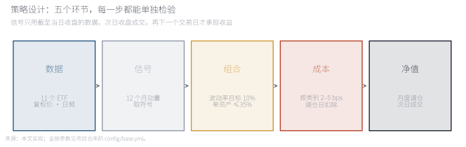
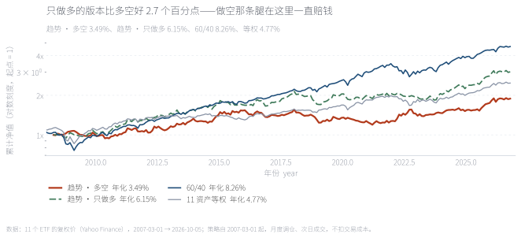
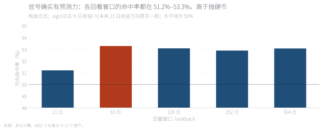
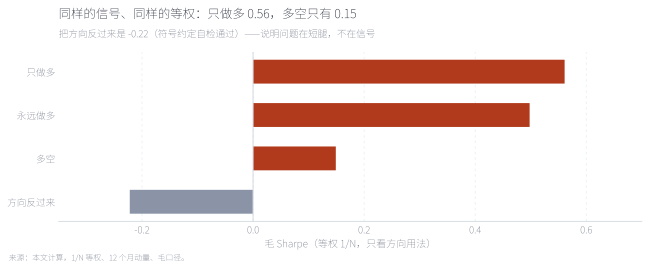
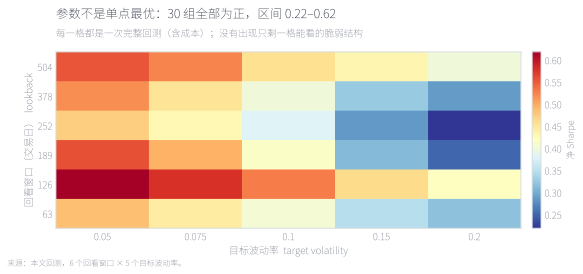
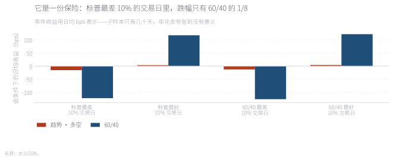
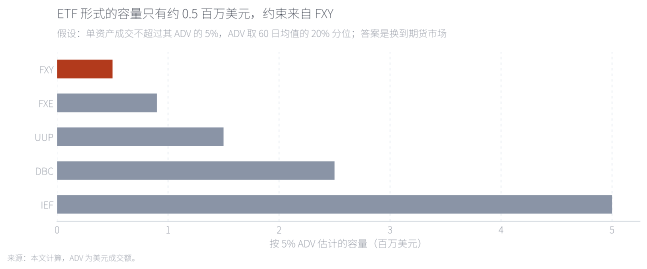

用 11 个流动性最好的 ETF、18.5 年数据检验跨资产时序动量。信号本身是有效的：sign(过去 N 日收益) 对未来 21 日方向的命中率稳定在 53%，30 组参数全部为正。但在一个几乎全是长牛的资产池里，做空那条腿一直在赔钱——多空版本夏普只有 0.38，只做多是 0.58，两者都跑不赢同期 60/40 的 0.75。它真正提供的不是收益，而是条件收益：标普最差 10% 的交易日里，它的日均跌幅只有 60/40 的八分之一；2022 年它涨 13.9%，而 60/40 跌 16.6%。 Eleven liquid ETFs and 18.5 years test cross-asset time-series momentum. The signal works: the direction hit rate of sign(past N-day return) against the next 21 days is a steady 53%, and all 30 parameter combinations are positive. But in a universe of assets that mostly went up, the short leg bleeds — the long-short version earns a Sharpe of 0.38 against 0.58 for long-only, and neither beats the 60/40's 0.75. What it actually delivers is conditional return: on the worst 10% of days for the S&P 500 it loses one eighth of what the 60/40 loses, and in 2022 it gained 13.9% while the 60/40 fell 16.6%.
关键词 时序动量 · 趋势跟踪 · 波动率目标 · 危机 alpha · 做空约束 · 容量Keywords Time-series momentum · trend following · volatility targeting · crisis alpha · short constraints · capacity
时序动量（time-series momentum，也叫趋势跟踪）是一条非常简单的规则：看资产自己过去一段时间的涨跌方向，顺着它下注。涨了多久就做多多久，跌了多久就做空多久；仓位按波动率缩放，让每个资产贡献相同的风险。它不预测宏观、不比估值、不需要横截面排序——只看价格自己。
为什么它应该有效，文献给了三条经济学解释。第一，信息扩散是渐进的：宏观消息不会一天之内完全进入价格，机构建仓、企业套保、央行干预都会把价格的变化拉长成一段时间。第二，存在「风险管理型」资金：目标波动率、风险平价、CTA 这类资金在波动上升时被迫减仓，在趋势里形成同向的追加卖出，让下跌更连续。第三，行为层面存在处置效应：投资者倾向于过早卖出盈利、过久持有亏损，这种不对称会把趋势拖长。
这三条都指向同一件事：趋势策略赚的是「价格黏性」的钱，而价格黏性在越容易形成单边行情的市场里越明显——期货、外汇、商品。这就带出本文要检验的核心问题：把同一套信号搬到 11 个 ETF 上，还剩多少？

五个环节里，真正决定成败的是最后两个：成本与容量。很多看起来漂亮的趋势回测死在「换手太大」或者「想交易的资产根本买不到量」上。本文把这两项单独做成 Exhibit 7。
Of the five steps, the last two decide whether a trend backtest survives contact with reality: cost and capacity. Both get their own exhibit here.
来源：本文实现，全部参数见项目仓库的 config/base.yml。Source: this implementation; all parameters live in the project's config/base.yml.
样本是 11 个流动性最好的 ETF 的日频复权价（含分红），覆盖股票、利率、黄金、商品、外汇与房地产：SPY、EFA、EEM、IEF、TLT、GLD、DBC、UUP、FXE、FXY、VNQ。时间从 2007-03 到 2026-10，共 4,931 个交易日；策略自 2008-04 起（动量需要 252 日预热），18.5 年。
信号是过去 252 个交易日累计收益的符号；权重按 1/60 日已实现波动分配，再用 60 日协方差把事前波动校准到 10%，单资产上限 35%、总敞口上限 2.0。每月最后一个交易日生成信号，次日收盘成交，再下一个交易日才开始承担收益——这层滞后是刻意的，代码里有一个专门的未来函数测试：把未来数据放大 25 倍，当天的权重必须完全不变。
成本按资产类别给单边 bps（股票与利率 2、黄金 3、外汇 3、REIT 4、商品 5），在调仓日扣除。对照组合是两个：60/40（60% 股票 + 40% 的 7–10 年期美债）与11 资产等权。
有三件事必须先说清楚，否则后面的数字会被误读。第一，ETF 不能做空：多空账簿假设通过期货或互换实现，因此没有借券成本，也没有保证金约束。第二，ETF 复权价不含 roll：这是优点（收益干净），代价是看不到 carry。第三，样本从 2007 年开始，恰好覆盖 QE、零利率与 2022 年加息——这是趋势策略公认的弱周期。

最反直觉的一条是绿色虚线（只做多）跑在红色实线（多空）之上——同一套信号、同一套仓位规则，只是不许做空，年化就高出 2.7 个百分点。这不是噪声：2009、2013、2020、2023 这些强劲反弹的年份里，做空信号在下跌末端建仓，然后被反弹打掉。18.5 年下来，1 元变成 1.89 元（多空）、3.02 元（只做多）、4.69 元（60/40）。
The counter-intuitive part is that the green dashed line (long-only) sits above the red one (long-short): same signal, same sizing, no shorting allowed, and 2.7 points more a year. Weak rebounds in 2009, 2013, 2020 and 2023 repeatedly punished short positions opened late in a decline. One unit ends at 1.89 (long-short), 3.02 (long-only) and 4.69 (60/40).
来源：本文回测，月度调仓、次日成交，净口径含成本。Source: backtest, monthly rebalancing, next-day execution, net of costs.
把四年份挑出来看，策略的性格非常清楚：2008 年 +6.3%（60/40 −16.3%）、2018 年 −12.6%（60/40 −2.0%）、2020 年 −5.5%（60/40 +16.6%）、2022 年 +13.9%（60/40 −16.6%）。它在利率下行、风险资产下跌的年份赚钱，在强反弹年份亏钱。这与趋势策略「做多波动率、做空均值回归」的直觉完全一致——它买的不是经济增长，是市场的单边性。
在做任何组合优化之前，先问一个更基本的问题：sign(过去 N 日收益) 到底能不能预测未来方向。做法是把每个资产的信号与它之后 21 个交易日的收益方向做比对，按不同回看窗口各算一次。

五个回看窗口的命中率全部落在 51.2%–53.3%，都高于抛硬币。53% 听起来很薄——它确实薄，一个月的方向只有 3 个百分点的边缘优势。但两层含义值得注意：第一，这个边缘是稳定的，不依赖某一个神奇参数；第二，正因为薄，它必须靠宽度（更多资产）和纪律（成本、容量、不放大杠杆）来变成钱，而不能靠加杠杆硬撑。
Every lookback lands between 51.2% and 53.3%, above a coin toss. A 53% edge on monthly direction is thin — thin enough that it has to be harvested through breadth, cost discipline and capacity, not through leverage.
来源：本文计算，4,931 个交易日 × 11 个资产。Source: author's calculations, 4,931 trading days across eleven assets.
既然信号是有效的，为什么多空版本反而更差？把组合构造全部简化——固定 1/N 等权，只改方向用法——答案就露出来了。

四根柱子在讲一件事：多空毛夏普只有 0.15，只做多是 0.56，而永远做多是 0.50。也就是说，在这个宇宙里，趋势信号的价值几乎全部来自「在下跌前离场」，而不是「在下跌中做空」；而把方向反过来做，毛夏普是 −0.22——符号约定没错。原因不神秘：11 个资产里绝大多数在过去 18 年长期上行，做空等于持续支付向上的漂移。趋势需要的不是「会波动的资产」，而是「会跌的资产」。
Four bars tell one story: long-short earns a gross Sharpe of 0.15, long-only 0.56, and always-long 0.50. Almost all of the signal's value comes from leaving before declines, not from shorting into them; reversing the sign gives −0.22, so the convention is right. Most of the eleven assets trended up over eighteen years, so being short meant paying an upward drift. Trend does not need volatile assets; it needs assets that can fall.
来源：本文计算，1/N 等权、12 个月动量、毛口径。Source: author's calculations, equal weights, 12-month momentum, gross of costs.

6 个回看窗口 × 5 个目标波动率 = 30 组，净夏普全部为正，区间 0.22–0.62，最优在回看 126 日、目标波动 5%（夏普 0.62）。没有出现「只有某一组参数能看」的脆弱结构，这是稳健性的最低要求。但必须诚实记录：这次一共尝试了 30 组参数，正式对外报告应当声明尝试次数并做多重检验调整，否则最优的那一格只是噪声。
Thirty combinations (six lookbacks by five target volatilities) all produce a positive net Sharpe, between 0.22 and 0.62, with the best at a 126-day lookback and 5% target volatility. That is a plateau rather than a peak — the minimum bar for robustness. It should also be recorded that thirty specifications were tried; a formal write-up must disclose that count and adjust for multiple testing.
来源：本文回测，每一格都是完整的一次回测（含成本）。Source: full backtest per cell, costs included.

按「标普最差 10% 的交易日」分组，策略日均亏 15.4 bps，60/40 亏 122.1 bps——差了 8 倍；换成「60/40 最差 10%」的分组，是 −12.6 对 −126.0 bps，差了 10 倍。而它为此付出的代价写在右边：最好的日子里它几乎不参与（+3.5 对 +117.6 bps）。这是一份标准保险的形状——保费是上涨时的机会成本，赔付是下跌时的凸性。
Sorting by the worst 10% of days for the S&P 500, the strategy loses 15.4bps a day against 122.1bps for the 60/40 — eight times less; on the worst 10% of days for the 60/40 itself it is −12.6 against −126.0bps. The premium is on the right: on the best days it barely participates (+3.5 against +117.6bps). That is the shape of insurance.
来源：本文回测；条件收益用日均 bps，子样本只有几十天，年化会夸张。Source: backtest; conditional returns in average daily bps, since annualising a few dozen days is misleading.
换一个角度：把策略与 60/40 的滚动 12 个月相关性摊开，中位数只有 −0.02，而且有大约一半的时间是正的。这意味着它的分散化价值是条件性的：在真正的压力期（2008、2022）非常可靠，在平静期反而是拖累。资产配置里说的「危机 alpha」，赚的就是这部分条件相关性的钱。
成本这一关出人意料地好过：把成本假设放大 10 倍，净年化仍有 0.83%（基准假设下 3.49%），收益归零的成本倍数在样本内没有出现。换句话说，问题从来不是交易费用，而是这条信号在这个资产池里的原始期望值本来就薄。

容量这一关则完全不行。按「单资产成交不超过其 ADV 的 5%、ADV 取 20% 分位」估计，整个策略只能承载约 0.5 百万美元，约束来自日元 ETF（FXY），随后是欧元（FXE）与美元（UUP）。这不是策略的问题，是工具的问题：趋势策略恰恰要在这些资产上换手，而它们的 ETF 太小。结论很直接——要上规模，必须换到期货市场。
Capacity fails outright. With a 5% participation limit and ADV taken at its 20th percentile, the whole strategy supports roughly $0.5m, bound by the yen ETF, then the euro and the dollar. The problem is not the strategy but the wrapper: trend needs to trade exactly these assets, and their ETFs are too small. The conclusion is blunt — to run size, move to futures.
来源：本文计算，ADV 为美元成交额。Source: author's calculations; ADV in US dollars.
十个组合来自同一次运行（多空 / 只做多 × 5 个目标波动率），灰色虚线是基准（多空、10%）。可以看出一件事：把目标波动率从 5% 拉到 20%，年化与夏普都在变差——多空从 0.47 掉到 0.22，只做多从 0.63 掉到 0.53。这符合直觉：杠杆放大的是波动，不是边缘；一个薄信号加杠杆，只是把噪声也放大。真正能改善它的只有两个方向：更宽的资产池，和更低成本的实施工具。
Ten portfolios from a single run (long-short and long-only across five target volatilities), with the baseline as the grey dashed line. Raising the target volatility from 5% to 20% makes both return and Sharpe worse — 0.47 to 0.22 for long-short, 0.63 to 0.53 for long-only. Leverage amplifies the noise, not the edge. Only two things would improve this: a broader universe and a cheaper implementation.
来源：本文回测，净口径含成本。Source: backtest, net of costs.
三条结论。第一，信号是真的，但很薄：53% 的方向命中率、30 组参数全为正、方向反转后为负——这三点合起来说明它不是数据挖掘的产物，但它的边缘只有几个百分点，必须靠宽度和纪律才能变成钱。第二，做空需要「会跌的资产」：在这批以长牛资产为主的 ETF 上，短腿是纯负贡献；把同样的信号放到有多空周期的大宗商品与外汇期货上，结论是否变化是下一篇要检验的。第三，它应该被放在保险那一栏：平均收益跑不赢 60/40，但在最坏的 10% 交易日里跌幅只有 1/8，2022 年 +13.9% 而 60/40 −16.6%。买它不是为了多赚，是为了在 60/40 失效的月份不跟着一起掉。
边界必须写清楚。一，ETF 不能做空，多空账簿假设由期货实现，未计借券成本与保证金强平。二，样本从 2007 年开始，覆盖 QE 全程，不含 1970–2000 的商品与外汇大周期，而那段正是趋势策略最有名的样本。三，成本是固定 bps，没有市场冲击模型；容量用 ADV 分位的粗估。四，参数扫描 30 组，未做正式的多重检验调整。五，本文检验的是公开描述的规则，不是任何机构的真实策略或真实账户。
Full English version below.
Question. Time-series momentum is one of the oldest systematic strategies: hold an asset long if it has been rising, short if it has been falling, size positions by volatility. We test it on eleven liquid ETFs — US, developed and emerging equities, two Treasury maturities, gold, broad commodities, the dollar, the euro, the yen and REITs — from March 2007 to October 2026, with the strategy live from April 2008.
Result 1 — the signal works but is thin. The sign of the trailing return predicts the direction of the next 21 days 51.2%–53.3% of the time depending on the lookback, and reversing the signal gives a gross Sharpe of −0.22. All thirty parameter combinations produce a positive net Sharpe.
Result 2 — the short leg is the problem. Long-short earns 3.49% a year with a Sharpe of 0.38; long-only earns 6.15% with 0.58; the 60/40 earns 8.26% with 0.75. With identical equal weights, long-short earns a gross Sharpe of 0.15, long-only 0.56 and always-long 0.50: the value comes from avoiding declines, not from shorting them. Most of these assets trended up over the sample, so shorts paid an upward drift — trend needs assets that can fall.
Result 3 — it is insurance, not an engine. On the worst 10% of days for the S&P 500 the strategy loses 15.4bps a day against 122.1bps for the 60/40, and on the worst 10% of days for the 60/40 itself, −12.6 against −126.0bps. It gives up the upside: +3.5 against +117.6bps on the best days. In 2022 it gained 13.9% while the 60/40 fell 16.6%.
Result 4 — costs are fine, capacity is not. At ten times the cost assumption the strategy still earns 0.83% a year. But with a 5% participation limit the whole ETF implementation supports only about $0.5m, bound by the yen ETF. Running size requires futures.
Implication. In a universe dominated by assets that mostly rise, trend following belongs in the crisis-hedge and diversification budget rather than the return engine. Whether it can be more than that is an empirical question about the universe, and it is the next test: the same signal on futures markets that contain real downtrends.
数据。11 个 ETF 的日频复权价（含分红），来自 Yahoo Finance：SPY、EFA、EEM、IEF、TLT、GLD、DBC、UUP、FXE、FXY、VNQ。样本 2007-03-01 至 2026-10-05，共 4,931 个交易日（要求 11 个资产全部有价）。美元成交额用于容量估计。
信号与仓位。信号＝过去 252 个交易日累计收益的符号；每资产权重＝方向 × 目标波动率 ÷ (60 日已实现波动 × √N)，再用 60 日协方差矩阵把事前波动校准到目标值；随后施加单资产 35% 与总敞口 2.0 的约束。波动率下限 4%，避免极端仓位。
时间线。t 日收盘生成信号 → t+1 日收盘成交（当天扣成本）→ t+2 日起承担收益；年内权重随价格漂移。代码里有一个专门的未来函数测试：把未来收益放大 25 倍，当天的目标权重必须完全不变；改动过去的数据则必须改变权重。
成本与容量。成本＝Σ|Δw| × 按资产类别的单边 bps（2–5 bps），在调仓日扣除；turnover 用两向口径。容量假设单资产成交不超过其 ADV 的 5%，ADV 取 60 日美元成交额均值的 20% 分位（避免用流动性最差的一天）。
代码。完整实现（数据、信号、组合、回测、评估、10 张图、chart pack 网页）在独立仓库 github.com/Aayloo/cross-asset-trend，一条命令复现：python run.py --config config/base.yml；9 个不变量测试：python -m pytest -q。本页图中的数字来自同一次运行，run manifest 记录了配置哈希、代码哈希与数据哈希。
Data. Daily total-return prices for eleven ETFs (SPY, EFA, EEM, IEF, TLT, GLD, DBC, UUP, FXE, FXY, VNQ) from Yahoo Finance, 1 March 2007 to 5 October 2026, 4,931 trading days on which all eleven traded. Dollar volume feeds the capacity estimate.
Signal and sizing. Signal = sign of the trailing 252-day return. Weight = direction × target volatility ÷ (60-day realised volatility × √N), then re-scaled using the 60-day covariance so that ex-ante volatility matches the target, with a 35% per-asset cap and a 2.0 gross cap. Volatility is floored at 4%.
Timeline. Signals are formed at the close of day t, traded at the close of day t+1 (costs charged that day), and earn returns from t+2. The test suite proves no look-ahead: inflating future returns by 25× leaves today's target weights unchanged, while changing the past changes them.
Cost and capacity. Cost = Σ|Δw| × per-class one-way bps (2–5), charged on rebalance days; turnover is reported on a two-way basis. Capacity assumes single-asset trading below 5% of ADV, with ADV taken at the 20th percentile of its 60-day average to avoid the least liquid day.
Code. The full implementation lives at github.com/Aayloo/cross-asset-trend: one command reproduces everything, and nine invariant tests run without network access. Figures on this page come from the same run whose manifest records the config, code and data hashes.
一、ETF 不能做空。多空账簿假设通过期货或互换实现，因此没有借券成本、没有保证金约束、也没有强平。真实的多空趋势组合在 2020 年 3 月这类流动性冲击里会遇到与回测完全不同的处境。
二、ETF 价格不含 roll。这既是优点也是缺点：好处是收益干净、没有连续期货的价差污染；代价是看不到 carry——而 carry 是期货趋势策略里真实存在的收益来源，缺了它，本文对「趋势能赚多少」的估计是偏保守的。
三、样本起点决定结论。2007 年之后是趋势策略公认的弱周期：QE 抑制了单边下跌，2020 年之后的反弹又快又猛。把同一套规则放到 1970–2000 年，命中率与收益都会不同——这不是「趋势失效」，而是「不同的市场结构给同一个信号不同的赔率」。
One: ETFs cannot be shorted. The short book is assumed to be implemented via futures or swaps, so there is no borrow cost, no margin and no forced liquidation. A real long-short trend book in March 2020 faced something the backtest does not model.
Two: ETF prices exclude roll. That is both a virtue and a cost: the returns are clean, but carry is invisible — and carry is a genuine part of what futures trend strategies earn. If anything, this note understates what a futures implementation would show.
Three: the start date decides the answer. The post-2007 period is a known weak regime for trend: QE suppressed sustained declines and post-2020 rebounds were fast. Run the same rule over 1970–2000 and both the hit rate and the returns change. That is not trend failing; it is a different market structure offering different odds to the same signal.